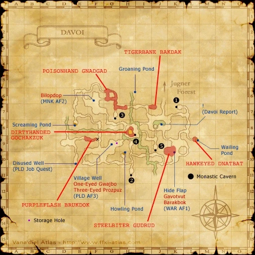

Level 75 reference · Zenith rules
|
Job: Dragoon Notorious Monster |
|
|
Zone |
Level |
Drops |
Steal |
Spawns |
Notes |
|
33-34 |
1 |
A, L, S, Sc | |||
|
HP = Detects Low HP; M = Detects Magic; Sc = Follows by Scent; T(S) = True-sight; T(H) = True-hearing JA = Detects job abilities; WS = Detects weaponskills; Z(D) = Asleep in Daytime; Z(N) = Asleep at Nighttime | |||||


Image source
Notes:
- Lottery Spawn from the Orcs around K-9 to K-10.
- Around 2600HP
- Special Attacks: Call Wyvern, Jump
Adapted from Eden Wiki: Steelbiter Gudrud · Contributors and history · CC BY-SA 4.0. Revision 1507. Layout, links and optional background text adapted for Zenith.